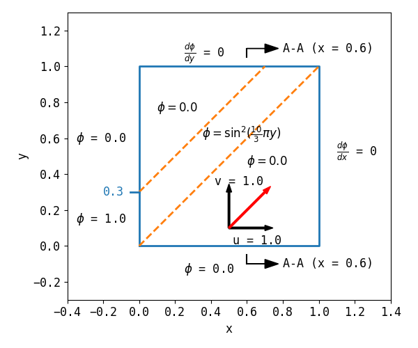
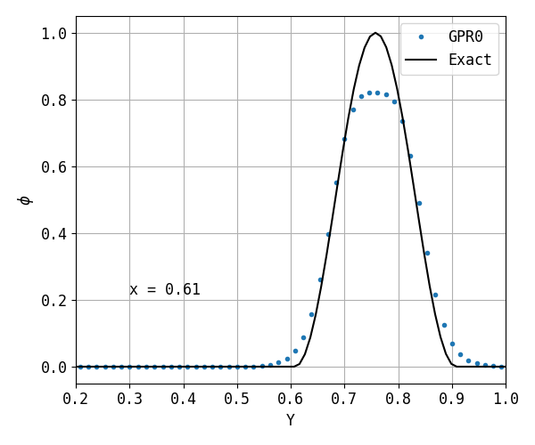
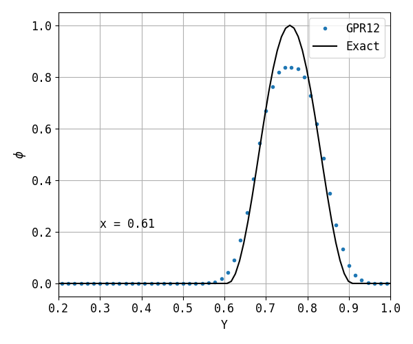
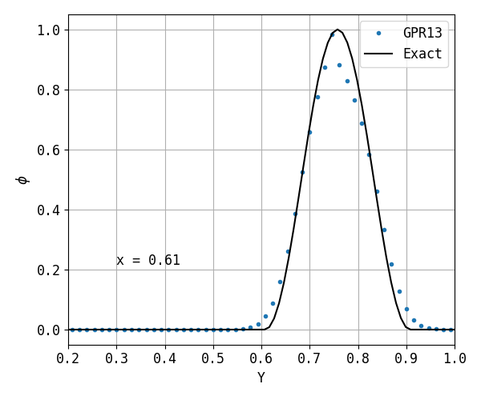

2.4.5. Sine Square¶
2.4.5.1. Problem Description¶
The domain is a unit square \(x \in [0.0, 1.0], y \in [0.0, 1.0]\). The boudary conditions are
\[\begin{split}\phi =\sin^2(\frac{10}{3} \pi y) &, \quad \text{if} \quad x = 0.0 \quad \text{and} \quad y = [0.0, 0.3]\\
\frac{d \phi}{d x} = 0 &, \quad \text{if} \quad x = 1.0\\
\phi = 0 &, \quad \text{if} \quad y = 0.0\\
\frac{d \phi}{d y} = 0 &, \quad \text{if} \quad y = 1.0\\\end{split}\]
The velocity is \(\mathbf{u}=(1, 1)\).

Fig. 2.52 Illustration of the problem.¶
2.4.5.2. Results¶
This example tests three GRP (Generalized polynomial-ratio) schemes.

Fig. 2.53 GPRO.¶

Fig. 2.54 GPR12.¶

Fig. 2.55 GPR13.¶
2.4.5.3. Case Information¶
Run time infomation:
Functions |
Wall Time (s) |
|---|---|
dt_cmake |
2.32600e-03 |
dt_make |
1.14000e-03 |
dt_run |
1.46700e-03 |
dt_plot |
1.47400e-03 |
File |
Creat Time |
Modified Time |
|---|---|---|
main.cpp |
20-01-04 19:02 |
20-01-04 19:02 |
CMakeLists.txt |
20-01-04 17:34 |
20-01-04 17:34 |
plot.py |
20-01-04 19:00 |
20-01-04 19:00 |
run.py |
20-01-12 17:25 |
20-01-12 17:25 |
report.rst |
20-01-04 19:33 |
20-01-04 19:33 |